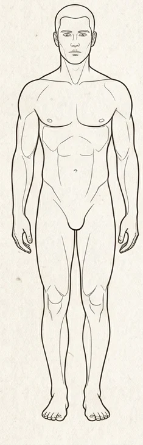
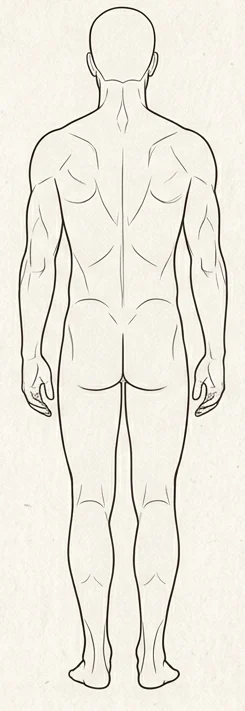
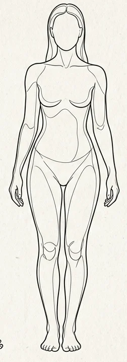
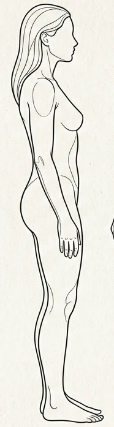

링크온 신체 그림 → 부상 부위
좌우는 환자 기준입니다. 색칠된 영역 위에 마우스를 올리면 부위 이름이 나옵니다.
수작업으로 정의한 그림상 영역입니다. 경계 0.8%와 겹침은 확인 대상으로 남깁니다. 옆면은 좌우를 확정하지 않습니다.
남성 앞면

남성 뒷면

여성 앞면

여성 옆면

실제 판정 함수 실행 예
MALE · view=0 · (40,58) → 우측 대퇴부 mappedMALE · view=0 · (53,36) → 상복부 mappedMALE · view=0 · (53,42) → 하복부 mappedMALE · view=1 · (40,60) → 좌측 대퇴부 mappedFEMALE · view=1 · (40,34) → 상복부 측면 / 상완부 (좌우 미확인) · 겹침 확인 ambiguous
linkone-body-v1 · 원본 그림 4장, 영역 101개 · 임상 진단이나 장기 손상을 판정하지 않습니다.